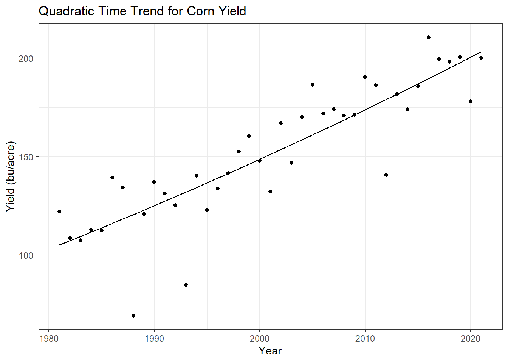

Chapter 17 Blocks
17.1 Equations
Here is an equation.
\[\begin{equation} f\left(k\right) = \binom{n}{k} p^k\left(1-p\right)^{n-k} \tag{17.1} \end{equation}\]
You may refer to using \@ref(eq:binom), like see Equation (17.1).
17.2 Theorems and proofs
Labeled theorems can be referenced in text using \@ref(thm:tri), for example, check out this smart theorem 17.1.
Theorem 17.1 For a right triangle, if \(c\) denotes the length of the hypotenuse and \(a\) and \(b\) denote the lengths of the other two sides, we have \[a^2 + b^2 = c^2\]
Read more here https://bookdown.org/yihui/bookdown/markdown-extensions-by-bookdown.html.
17.3 Callout blocks
The R Markdown Cookbook provides more help on how to use custom blocks to design your own callouts: https://bookdown.org/yihui/rmarkdown-cookbook/custom-blocks.html
title: “Weather and Corn Yield Regressions”
17.4 Weather Data Analysis
17.4.1 Load the PRISM daily maximum temperatures
# daily max temperature
# dimensions: counties x days x years
prism <- readMat("data/prismiowa.mat")
# look at county #1
t_1981_c1 <- prism$tmaxdaily.iowa[1,,1]
t_1981_c1[366]## [1] NaNplot(1:366, t_1981_c1, type = "l")
ggplot() +
geom_line(mapping = aes(x=1:366, y = t_1981_c1)) +
theme_bw() +
xlab("day of year") +
ylab("daily maximum temperature (°C)") +
ggtitle("Daily Maximum Temperature, Iowa County #1")## Warning: Removed 1 row(s) containing missing values (geom_path).
# assign dimension names to tmax matrix
dimnames(prism$tmaxdaily.iowa) <- list(prism$COUNTYFP, 1:366, prism$years)
#wants a list corresponding to different dimensions - first dim is county code (FP code)
# converted 3d matrix into a data frame
tmaxdf <- as.data.frame.table(prism$tmaxdaily.iowa)
# relabel the columns
colnames(tmaxdf) <- c("countyfp","doy","year","tmax")
tmaxdf <- tibble(tmaxdf)17.5 Temperature trends
17.5.1 Summer temperature trends: Winneshiek County
tmaxdf$doy <- as.numeric(tmaxdf$doy)
tmaxdf$year <- as.numeric(as.character(tmaxdf$year))
winnesummer <- tmaxdf %>%
filter(countyfp==191 & doy >= 152 & doy <= 243) %>%
group_by(year) %>%
summarize(meantmax = mean(tmax))
ggplot(winnesummer, mapping = aes(x = year, y = meantmax)) +
geom_point() +
theme_bw() +
labs(x = "year", y = "Tmax (°C)") +
geom_smooth(method = lm)## `geom_smooth()` using formula 'y ~ x'
lm_summertmax <- lm(meantmax ~ year, winnesummer)
summary(lm_summertmax)##
## Call:
## lm(formula = meantmax ~ year, data = winnesummer)
##
## Residuals:
## Min 1Q Median 3Q Max
## -2.5189 -0.7867 -0.0341 0.6859 3.7415
##
## Coefficients:
## Estimate Std. Error t value Pr(>|t|)
## (Intercept) 41.57670 36.44848 1.141 0.262
## year -0.00747 0.01823 -0.410 0.684
##
## Residual standard error: 1.232 on 36 degrees of freedom
## Multiple R-squared: 0.004644, Adjusted R-squared: -0.02301
## F-statistic: 0.168 on 1 and 36 DF, p-value: 0.684417.5.2 Winter Temperatures - Winneshiek County
winnewinter <- tmaxdf %>%
filter(countyfp==191 & doy <= 59 | doy >= 335 & !is.na(tmax)) %>%
group_by(year) %>%
summarize(meantmax = mean(tmax))
ggplot(winnewinter, mapping = aes(x = year, y = meantmax)) +
geom_point() +
theme_bw() +
labs(x = "year", y = "Tmax (°C)") +
geom_smooth(method = lm)
lm_wintertmax <- lm(meantmax ~ year, winnewinter)
summary(lm_wintertmax)##
## Call:
## lm(formula = meantmax ~ year, data = winnewinter)
##
## Residuals:
## Min 1Q Median 3Q Max
## -8.0748 -2.6494 0.7715 2.2172 4.1361
##
## Coefficients:
## Estimate Std. Error t value Pr(>|t|)
## (Intercept) -119.10546 94.08124 -1.266 0.214
## year 0.05960 0.04705 1.267 0.213
##
## Residual standard error: 3.181 on 36 degrees of freedom
## Multiple R-squared: 0.04267, Adjusted R-squared: 0.01608
## F-statistic: 1.605 on 1 and 36 DF, p-value: 0.213417.5.3 Multiple regression – Quadratic time trend
winnewinter$yearsq <- winnewinter$year^2
lm_wintertmaxquad <- lm(meantmax ~ year + yearsq, winnewinter)
summary(lm_wintertmaxquad)##
## Call:
## lm(formula = meantmax ~ year + yearsq, data = winnewinter)
##
## Residuals:
## Min 1Q Median 3Q Max
## -7.680 -2.813 0.640 2.264 4.072
##
## Coefficients:
## Estimate Std. Error t value Pr(>|t|)
## (Intercept) -1.049e+04 1.939e+04 -0.541 0.592
## year 1.043e+01 1.940e+01 0.538 0.594
## yearsq -2.594e-03 4.851e-03 -0.535 0.596
##
## Residual standard error: 3.213 on 35 degrees of freedom
## Multiple R-squared: 0.05043, Adjusted R-squared: -0.003832
## F-statistic: 0.9294 on 2 and 35 DF, p-value: 0.4043winnewinter$fitted <- lm_wintertmaxquad$fitted.values
ggplot(winnewinter) +
geom_point(mapping = aes(x = year, y = meantmax)) +
geom_line(mapping = aes(x = year, y = fitted)) +
theme_bw() +
labs(x = "year", y = "tmax")
17.5.4 Download NASS corn yield data
# set our API key with NASS
nassqs_auth(key = "08EB8353-3696-30D9-96D4-839C4DEA18B4")
# parameters to query on
params <- list(commodity_desc = "CORN", util_practice_desc = "GRAIN", prodn_practice_desc = "ALL PRODUCTION PRACTICES", year__GE = 1981, state_alpha = "IA")
# download
cornyieldsall <- nassqs_yields(params)
cornyieldsall$county_ansi <- as.numeric(cornyieldsall$county_ansi)
cornyieldsall$yield <- as.numeric(cornyieldsall$Value)
# clean and filter this dataset
cornyields <- select(cornyieldsall, county_ansi, county_name, yield, year) %>%
filter(!is.na(county_ansi) & !is.na(yield))
cornyields <- tibble(cornyields)17.6 Assignment
17.6.1 Question 1a: Extract Winneshiek County corn yields, fit a linear time trend, make a plot. Is there a significant time trend?
winnecorn <- cornyields %>%
filter(county_ansi==191)
ggplot(winnecorn, mapping = aes(x = year, y = yield)) +
geom_point() +
labs(x = "Year", y = "Yield (bu/acre)", title = "Winneshiek Corn Yield over Time") +
geom_smooth(method = lm) +
theme_bw()
lm_winnecorn <- lm(yield ~ year, winnecorn)
summary(lm_winnecorn)##
## Call:
## lm(formula = yield ~ year, data = winnecorn)
##
## Residuals:
## Min 1Q Median 3Q Max
## -51.163 -1.841 2.363 9.437 24.376
##
## Coefficients:
## Estimate Std. Error t value Pr(>|t|)
## (Intercept) -4763.290 448.286 -10.63 4.46e-13 ***
## year 2.457 0.224 10.96 1.77e-13 ***
## ---
## Signif. codes: 0 '***' 0.001 '**' 0.01 '*' 0.05 '.' 0.1 ' ' 1
##
## Residual standard error: 16.97 on 39 degrees of freedom
## Multiple R-squared: 0.7551, Adjusted R-squared: 0.7488
## F-statistic: 120.2 on 1 and 39 DF, p-value: 1.767e-13From our linear model, we can see that there is a significant time trend. The p value for the year is less than alpha = 0.05. This agrees with the graph showing the yield data following the linear model line in a positive slope. With increasing years, there is a concomitant increase in yield.
17.6.2 Question 1b: Fit a quadratic time trend (i.e., year + year^2) and make a plot. Is there evidence for slowing yield growth?
winnecorn$yearsq <- winnecorn$year^2
lm_winnecornquad <- lm(yield ~ year + yearsq, winnecorn)
summary(lm_winnecornquad)##
## Call:
## lm(formula = yield ~ year + yearsq, data = winnecorn)
##
## Residuals:
## Min 1Q Median 3Q Max
## -51.384 -3.115 1.388 9.743 25.324
##
## Coefficients:
## Estimate Std. Error t value Pr(>|t|)
## (Intercept) 2.583e+04 8.580e+04 0.301 0.765
## year -2.812e+01 8.576e+01 -0.328 0.745
## yearsq 7.641e-03 2.143e-02 0.357 0.723
##
## Residual standard error: 17.17 on 38 degrees of freedom
## Multiple R-squared: 0.7559, Adjusted R-squared: 0.7431
## F-statistic: 58.84 on 2 and 38 DF, p-value: 2.311e-12winnecorn$fitted <- lm_winnecornquad$fitted.values
ggplot(winnecorn) +
geom_point(mapping = aes(x = year, y = yield)) +
geom_line(mapping = aes(x = year, y = fitted)) +
theme_bw() +
labs(x = "Year", y = "Yield (bu/acre)", title = "Quadratic Time Trend for Corn Yield")
ggplot(winnecorn) +
geom_point(mapping = aes(x = year, y = yield)) +
geom_smooth(mapping = aes(x = year, y = fitted), method = lm) +
theme_bw() +
labs(x = "Year", y = "Yield (bu/acre)", title = "Quadratic Time Trend for Corn Yield")
There is not sufficient evidence for slowing yield growth. The year squared estimate is positive and the year is negative, indicating that yield growth is not slowing. The p values for the individual estimates are also greater than alpha = 0.05.
17.6.3 Question 2 – Time Series: Let’s analyze the relationship between temperature and yields for the Winneshiek County time series. Use data on yield and summer avg Tmax. Is adding year or Tmax^2 to your model helpful? Make a plot and interpret the results.
Combine data for yield and temperature in Winneshiek County:
summercorn <- inner_join(winnecorn,winnesummer, by = 'year')
summercorn$meantmaxsq <- summercorn$meantmax^2Make linear regression models with the different parameters of interest:
lm_summercorn_single <- lm(yield ~ meantmax, summercorn)
summary(lm_summercorn_single)##
## Call:
## lm(formula = yield ~ meantmax, data = summercorn)
##
## Residuals:
## Min 1Q Median 3Q Max
## -71.96 -19.85 -3.19 24.64 61.72
##
## Coefficients:
## Estimate Std. Error t value Pr(>|t|)
## (Intercept) 275.876 118.335 2.331 0.0255 *
## meantmax -4.763 4.438 -1.073 0.2902
## ---
## Signif. codes: 0 '***' 0.001 '**' 0.01 '*' 0.05 '.' 0.1 ' ' 1
##
## Residual standard error: 32.88 on 36 degrees of freedom
## Multiple R-squared: 0.03101, Adjusted R-squared: 0.004098
## F-statistic: 1.152 on 1 and 36 DF, p-value: 0.2902summercorn$fittedsingle <- lm_summercorn_single$fitted.values
lm_summercorn_quad <- lm(yield ~ meantmax + meantmaxsq, summercorn)
summary(lm_summercorn_quad)##
## Call:
## lm(formula = yield ~ meantmax + meantmaxsq, data = summercorn)
##
## Residuals:
## Min 1Q Median 3Q Max
## -56.587 -22.262 -0.982 22.409 52.798
##
## Coefficients:
## Estimate Std. Error t value Pr(>|t|)
## (Intercept) -4223.604 1446.639 -2.920 0.00609 **
## meantmax 328.918 107.068 3.072 0.00410 **
## meantmaxsq -6.173 1.979 -3.119 0.00362 **
## ---
## Signif. codes: 0 '***' 0.001 '**' 0.01 '*' 0.05 '.' 0.1 ' ' 1
##
## Residual standard error: 29.5 on 35 degrees of freedom
## Multiple R-squared: 0.2417, Adjusted R-squared: 0.1984
## F-statistic: 5.579 on 2 and 35 DF, p-value: 0.007887summercorn$fittedquad <- lm_summercorn_quad$fitted.values
lm_summercorn_year <- lm(yield ~ meantmax + year, summercorn)
summary(lm_summercorn_year)##
## Call:
## lm(formula = yield ~ meantmax + year, data = summercorn)
##
## Residuals:
## Min 1Q Median 3Q Max
## -53.071 -7.269 2.271 9.935 27.505
##
## Coefficients:
## Estimate Std. Error t value Pr(>|t|)
## (Intercept) -4791.774 513.812 -9.326 5.10e-11 ***
## meantmax -3.201 2.308 -1.387 0.174
## year 2.514 0.253 9.934 1.01e-11 ***
## ---
## Signif. codes: 0 '***' 0.001 '**' 0.01 '*' 0.05 '.' 0.1 ' ' 1
##
## Residual standard error: 17.06 on 35 degrees of freedom
## Multiple R-squared: 0.7463, Adjusted R-squared: 0.7318
## F-statistic: 51.48 on 2 and 35 DF, p-value: 3.761e-11summercorn$fittedyear <- lm_summercorn_year$fitted.values
lm_summercorn <- lm(yield ~ meantmax + year + meantmaxsq, summercorn)
summary(lm_summercorn)##
## Call:
## lm(formula = yield ~ meantmax + year + meantmaxsq, data = summercorn)
##
## Residuals:
## Min 1Q Median 3Q Max
## -44.683 -5.427 1.214 8.943 25.127
##
## Coefficients:
## Estimate Std. Error t value Pr(>|t|)
## (Intercept) -7280.2956 755.2808 -9.639 2.96e-11 ***
## meantmax 208.9004 52.9773 3.943 0.000381 ***
## year 2.3286 0.2166 10.752 1.77e-12 ***
## meantmaxsq -3.9259 0.9799 -4.006 0.000318 ***
## ---
## Signif. codes: 0 '***' 0.001 '**' 0.01 '*' 0.05 '.' 0.1 ' ' 1
##
## Residual standard error: 14.27 on 34 degrees of freedom
## Multiple R-squared: 0.8277, Adjusted R-squared: 0.8125
## F-statistic: 54.43 on 3 and 34 DF, p-value: 4.538e-13summercorn$fitted <- lm_summercorn$fitted.valuesPlot the linear model results
ggplot(summercorn) +
geom_point(mapping = aes(x = meantmax, y = yield)) +
geom_line(mapping = aes(x = meantmax, y = fittedsingle)) +
theme_bw() +
geom_smooth(mapping = aes(x = meantmax, y = fittedsingle), method = lm) +
labs(x = "Mean Max Temperature (°C)", y = "Yield (bu/acre)", title = "Corn Yield and Mean Maximum Summer Temperature")
ggplot(summercorn) +
geom_point(mapping = aes(x = meantmax, y = yield)) +
geom_line(mapping = aes(x = meantmax, y = fittedquad)) +
theme_bw() +
labs(x = "Mean Max Temperature (°C)", y = "Yield (bu/acre)", title = "Quadratic Temperature Trend for Corn Yield")
ggplot(summercorn) +
geom_point(mapping = aes(x = meantmax, y = yield)) +
theme_bw() +
geom_smooth(mapping = aes(x = meantmax, y = fittedquad), method = lm) +
labs(x = "Mean Max Temperature (°C)", y = "Yield (bu/acre)", title = "Quadratic Temperature Trend for Corn Yield")
ggplot(summercorn) +
geom_point(mapping = aes(x = meantmax, y = yield)) +
geom_smooth(mapping = aes(x = meantmax, y = fittedyear),method = lm) +
theme_bw() +
labs(x = "Mean Max Temperature (°C)", y = "Yield (bu/acre)", title = "Years and Max Temperature as Corn Yield Predictors")ggplot(summercorn) +
geom_point(mapping = aes(x = meantmax, y = yield)) +
geom_smooth(mapping = aes(x = meantmax, y = fitted),method = lm) +
theme_bw() +
labs(x = "Mean Max Temperature (°C)", y = "Yield (bu/acre)", title = "Years, Max Temperature, and Quadratic Temperature as Corn Yield Predictors")Adding tmax^2 and year is helpful to the model. From the simple linear regression, we saw that the R-squared value is 0.03101, indicating that the mean max temperature observation only explains 3.101% of the variability in yield. When tmax^2 was added, the R-squared value increased to 0.1984. When year was added, R-sqaured increased to 0.7318. When year and tmax^2 are added, the R-squared value changed to 0.8125, indicating that 81.25% of the variation within yield is explained by all predictors. These results suggest that adding year and tmax^2 make a stronger model.
The estimate for mean max temperature squared is negative, indicating that temperature change is slowing. With increasing maximum temperature, there is a decrease in yield. With increasing years, there is an increase in corn yield.
17.6.4 Question 3 – Cross-Section: Analyze the relationship between temperature and yield across all counties in 2018. Is there a relationship? Interpret the results.
Select data from 2018 and combine yield and temperature data:
yield <- cornyieldsall %>%
filter(year == 2018) %>%
group_by(county_name) %>%
unique() %>%
filter(!is.na(county_ansi))
temp <- tmaxdf %>%
group_by(countyfp) %>%
filter(year == 2018) %>%
filter(doy >= 152 & doy <= 243) %>%
summarize(meantmax = mean(tmax)) %>%
rename(county_ansi = "countyfp")
temp$county_ansi <- as.numeric(as.character(temp$county_ansi))
summeryield <- left_join(yield, temp, by='county_ansi') %>%
select(., county_ansi, county_name, yield, meantmax)Fit a simple and multiple regression model:
lm_summeryield <- lm(yield ~ meantmax, summeryield)
summary(lm_summeryield)##
## Call:
## lm(formula = yield ~ meantmax, data = summeryield)
##
## Residuals:
## Min 1Q Median 3Q Max
## -42.983 -15.041 0.955 16.795 31.999
##
## Coefficients:
## Estimate Std. Error t value Pr(>|t|)
## (Intercept) 312.466 63.387 4.929 3.69e-06 ***
## meantmax -4.216 2.241 -1.882 0.0631 .
## ---
## Signif. codes: 0 '***' 0.001 '**' 0.01 '*' 0.05 '.' 0.1 ' ' 1
##
## Residual standard error: 19.64 on 91 degrees of freedom
## Multiple R-squared: 0.03745, Adjusted R-squared: 0.02687
## F-statistic: 3.541 on 1 and 91 DF, p-value: 0.06308summeryield$meantmaxsq <- summeryield$meantmax^2
lm_summeryield_quad <- lm(yield ~ meantmax + meantmaxsq, summeryield)
summary(lm_summeryield_quad)##
## Call:
## lm(formula = yield ~ meantmax + meantmaxsq, data = summeryield)
##
## Residuals:
## Min 1Q Median 3Q Max
## -44.221 -15.399 5.007 14.541 30.879
##
## Coefficients:
## Estimate Std. Error t value Pr(>|t|)
## (Intercept) -5501.602 1860.830 -2.957 0.00397 **
## meantmax 406.789 131.493 3.094 0.00263 **
## meantmaxsq -7.256 2.321 -3.126 0.00239 **
## ---
## Signif. codes: 0 '***' 0.001 '**' 0.01 '*' 0.05 '.' 0.1 ' ' 1
##
## Residual standard error: 18.75 on 90 degrees of freedom
## Multiple R-squared: 0.1317, Adjusted R-squared: 0.1124
## F-statistic: 6.827 on 2 and 90 DF, p-value: 0.001736summeryield$fitted <- lm_summeryield_quad$fitted.valuesPlot results of models:
ggplot(summeryield, mapping = aes(x = meantmax, y = yield)) +
geom_point() +
labs(x = "Mean Max Temperature (°C)", y = "Yield (bu/acre)", title = "Corn Yield and Mean Maximum Summer Temperature in 2018") +
geom_smooth(method = lm) +
theme_bw()
ggplot(summeryield) +
geom_point(mapping = aes(x = meantmax, y = yield)) +
geom_line(mapping = aes(x = meantmax, y = fitted)) +
theme_bw() +
labs(x = "Mean Max Temperature (°C)", y = "Yield (bu/acre)", title = "Quadratic Temperature Trend for Corn Yield in 2018")
ggplot(summeryield) +
geom_point(mapping = aes(x = meantmax, y = yield)) +
geom_smooth(mapping = aes(x = meantmax, y = fitted), method = lm) +
theme_bw() +
labs(x = "Mean Max Temperature (°C)", y = "Yield (bu/acre)", title = "Quadratic Temperature Trend for Corn Yield in 2018")
From the graph of temperature and yield across all counties, we can see that there is a slight negative progression among the data. As temperature increases, yield decreases.
The estimate from the simple linear model is negative, which supports the illustration in the graph. However, the p value from the simple linear regression is greater than alpha = 0.05, so we do not have sufficient evidence to conclude that there is a relationship.
When mean temp max squared was added as an estimate in the model, the significance of the temperature predictors changed to less than alpha = 0.05. We can conclude from this model with temp and temp^2 as predictors, that there is a relationship between temperature and yield.
17.6.5 Question 4 – Panel: One way to leverage multiple time series is to group all data into what is called a “panel” regression. Convert the county ID code (“countyfp” or “county_ansi”) into factor using as.factor, then include this variable in a regression using all counties’ yield and summer temperature data. How does the significance of your temperature coefficients (Tmax, Tmax^2) change? Make a plot comparing actual and fitted yields and interpret the results of your model.
Convert county ID into factor and join temperature and yield data:
yieldall <- cornyieldsall %>%
group_by(county_name) %>%
unique() %>%
filter(!is.na(county_ansi))
tempall <- tmaxdf %>%
group_by(countyfp) %>%
filter(doy >= 152 & doy <= 243) %>%
summarize(meantmax = mean(tmax)) %>%
rename(county_ansi = "countyfp")
tempall$county_ansi <- as.numeric(as.character(tempall$county_ansi))
summeryieldall <- left_join(yieldall, tempall, by='county_ansi') %>%
select(., county_ansi, county_name, yield, meantmax, year)
summeryieldall$county_ansi <- as.factor(summeryieldall$county_ansi)Run simple and multiple regression models:
summeryieldall$meantmaxsq <- summeryieldall$meantmax^2
lm_summeryieldall <- lm(yield ~ meantmax + meantmaxsq, summeryieldall)
summary(lm_summeryieldall)##
## Call:
## lm(formula = yield ~ meantmax + meantmaxsq, data = summeryieldall)
##
## Residuals:
## Min 1Q Median 3Q Max
## -121.002 -22.522 -0.525 26.442 86.550
##
## Coefficients:
## Estimate Std. Error t value Pr(>|t|)
## (Intercept) -3680.191 844.714 -4.357 1.35e-05 ***
## meantmax 285.830 60.642 4.713 2.52e-06 ***
## meantmaxsq -5.325 1.088 -4.894 1.02e-06 ***
## ---
## Signif. codes: 0 '***' 0.001 '**' 0.01 '*' 0.05 '.' 0.1 ' ' 1
##
## Residual standard error: 35.29 on 4012 degrees of freedom
## Multiple R-squared: 0.0491, Adjusted R-squared: 0.04862
## F-statistic: 103.6 on 2 and 4012 DF, p-value: < 2.2e-16lm_summeryield_panel <- lm(yield ~ meantmax + meantmaxsq + county_ansi, summeryieldall)
summary(lm_summeryield_panel)##
## Call:
## lm(formula = yield ~ meantmax + meantmaxsq + county_ansi, data = summeryieldall)
##
## Residuals:
## Min 1Q Median 3Q Max
## -115.150 -22.076 -0.895 25.952 82.566
##
## Coefficients: (2 not defined because of singularities)
## Estimate Std. Error t value Pr(>|t|)
## (Intercept) -8.131e+03 5.398e+03 -1.506 0.13206
## meantmax 6.110e+02 3.926e+02 1.556 0.11971
## meantmaxsq -1.126e+01 7.133e+00 -1.578 0.11454
## county_ansi3 -5.811e+00 7.676e+00 -0.757 0.44905
## county_ansi5 -6.793e+00 6.844e+00 -0.992 0.32105
## county_ansi7 -1.623e+01 8.253e+00 -1.967 0.04930 *
## county_ansi9 -8.711e-01 7.185e+00 -0.121 0.90351
## county_ansi11 -3.433e+00 7.612e+00 -0.451 0.65202
## county_ansi13 -4.205e+00 7.649e+00 -0.550 0.58257
## county_ansi15 7.454e+00 7.158e+00 1.041 0.29774
## county_ansi17 1.167e-01 7.456e+00 0.016 0.98751
## county_ansi19 -2.918e+00 7.323e+00 -0.398 0.69028
## county_ansi21 -2.440e+00 7.683e+00 -0.318 0.75084
## county_ansi23 -1.161e+00 7.690e+00 -0.151 0.87995
## county_ansi25 -1.806e-02 7.650e+00 -0.002 0.99812
## county_ansi27 2.105e+00 7.317e+00 0.288 0.77361
## county_ansi29 7.371e+00 7.484e+00 0.985 0.32477
## county_ansi31 5.293e+00 7.495e+00 0.706 0.48010
## county_ansi33 -6.324e+00 7.010e+00 -0.902 0.36703
## county_ansi35 3.255e+00 7.632e+00 0.427 0.66975
## county_ansi37 -7.138e+00 6.879e+00 -1.038 0.29944
## county_ansi39 -2.494e+01 8.065e+00 -3.092 0.00200 **
## county_ansi41 -5.117e+00 7.647e+00 -0.669 0.50343
## county_ansi43 -2.358e+00 7.095e+00 -0.332 0.73960
## county_ansi45 4.344e-01 7.583e+00 0.057 0.95432
## county_ansi47 -4.662e-01 7.433e+00 -0.063 0.94999
## county_ansi49 8.485e+00 7.137e+00 1.189 0.23453
## county_ansi51 -3.678e+00 1.234e+01 -0.298 0.76561
## county_ansi53 -1.479e+01 8.834e+00 -1.674 0.09413 .
## county_ansi55 -1.107e+00 7.030e+00 -0.158 0.87485
## county_ansi57 1.363e+01 8.795e+00 1.549 0.12139
## county_ansi59 -9.503e+00 7.165e+00 -1.326 0.18479
## county_ansi61 -3.571e-01 6.970e+00 -0.051 0.95914
## county_ansi63 -4.546e+00 6.945e+00 -0.655 0.51274
## county_ansi65 -2.783e+00 6.867e+00 -0.405 0.68530
## county_ansi67 -6.171e+00 7.338e+00 -0.841 0.40041
## county_ansi69 -3.550e-01 7.598e+00 -0.047 0.96274
## county_ansi71 4.210e+01 2.262e+01 1.862 0.06275 .
## county_ansi73 1.060e+01 6.991e+00 1.516 0.12966
## county_ansi75 7.736e-01 7.678e+00 0.101 0.91974
## county_ansi77 1.762e+00 7.078e+00 0.249 0.80347
## county_ansi79 2.387e+00 7.541e+00 0.317 0.75156
## county_ansi81 -1.474e+00 6.932e+00 -0.213 0.83160
## county_ansi83 2.638e+00 7.629e+00 0.346 0.72948
## county_ansi85 9.046e+00 8.676e+00 1.043 0.29715
## county_ansi87 1.063e+01 9.601e+00 1.107 0.26822
## county_ansi89 -2.675e+00 9.051e+00 -0.296 0.76757
## county_ansi91 -1.429e+00 7.322e+00 -0.195 0.84531
## county_ansi93 1.744e+00 7.641e+00 0.228 0.81945
## county_ansi95 -2.068e-02 7.073e+00 -0.003 0.99767
## county_ansi97 -1.294e+01 7.622e+00 -1.697 0.08976 .
## county_ansi99 9.297e+00 7.064e+00 1.316 0.18818
## county_ansi101 1.561e+01 1.485e+01 1.051 0.29331
## county_ansi103 -2.953e+00 7.084e+00 -0.417 0.67680
## county_ansi105 -5.033e+00 7.734e+00 -0.651 0.51521
## county_ansi107 2.862e+00 7.820e+00 0.366 0.71439
## county_ansi109 6.575e-01 7.222e+00 0.091 0.92746
## county_ansi111 1.749e+01 1.488e+01 1.175 0.23988
## county_ansi113 -5.180e+00 7.716e+00 -0.671 0.50201
## county_ansi115 1.442e+01 1.007e+01 1.432 0.15209
## county_ansi117 -2.228e+01 8.094e+00 -2.753 0.00593 **
## county_ansi119 2.612e-01 7.526e+00 0.035 0.97231
## county_ansi121 -3.731e+00 7.171e+00 -0.520 0.60294
## county_ansi123 8.888e+00 7.583e+00 1.172 0.24125
## county_ansi125 1.991e+00 7.735e+00 0.257 0.79689
## county_ansi127 3.870e+00 7.700e+00 0.503 0.61528
## county_ansi129 2.855e+01 1.652e+01 1.728 0.08406 .
## county_ansi131 -5.815e-02 7.260e+00 -0.008 0.99361
## county_ansi133 8.667e+00 9.621e+00 0.901 0.36776
## county_ansi135 -1.747e+01 7.455e+00 -2.344 0.01915 *
## county_ansi137 1.680e+01 1.111e+01 1.512 0.13071
## county_ansi139 7.588e+00 7.370e+00 1.030 0.30325
## county_ansi141 3.578e+00 7.680e+00 0.466 0.64133
## county_ansi143 -2.783e+00 7.080e+00 -0.393 0.69430
## county_ansi145 1.119e+01 1.140e+01 0.982 0.32629
## county_ansi147 -4.178e+00 7.624e+00 -0.548 0.58377
## county_ansi149 1.951e+00 7.078e+00 0.276 0.78284
## county_ansi151 4.138e-01 7.721e+00 0.054 0.95726
## county_ansi153 1.348e+01 7.406e+00 1.820 0.06886 .
## county_ansi155 1.546e+01 8.682e+00 1.780 0.07508 .
## county_ansi157 5.593e+00 6.988e+00 0.800 0.42352
## county_ansi159 -1.981e+01 7.825e+00 -2.532 0.01137 *
## county_ansi161 -5.455e-01 7.676e+00 -0.071 0.94335
## county_ansi163 7.564e+00 7.326e+00 1.032 0.30190
## county_ansi165 3.609e-01 7.242e+00 0.050 0.96026
## county_ansi167 8.327e+00 7.282e+00 1.144 0.25287
## county_ansi169 1.817e-01 7.603e+00 0.024 0.98094
## county_ansi171 -9.328e-01 7.608e+00 -0.123 0.90243
## county_ansi173 -9.599e+00 8.955e+00 -1.072 0.28380
## county_ansi175 -1.234e+01 7.352e+00 -1.678 0.09336 .
## county_ansi177 2.064e+01 2.129e+01 0.969 0.33236
## county_ansi179 3.311e+00 1.016e+01 0.326 0.74458
## county_ansi181 -3.579e+00 7.771e+00 -0.461 0.64509
## county_ansi183 1.459e+01 9.259e+00 1.576 0.11510
## county_ansi185 -2.220e+01 7.476e+00 -2.970 0.00300 **
## county_ansi187 3.868e+00 7.664e+00 0.505 0.61381
## county_ansi189 -1.066e+00 6.842e+00 -0.156 0.87621
## county_ansi191 -3.217e+00 7.150e+00 -0.450 0.65273
## county_ansi193 1.477e+00 7.009e+00 0.211 0.83310
## county_ansi195 NA NA NA NA
## county_ansi197 NA NA NA NA
## ---
## Signif. codes: 0 '***' 0.001 '**' 0.01 '*' 0.05 '.' 0.1 ' ' 1
##
## Residual standard error: 34.65 on 3916 degrees of freedom
## Multiple R-squared: 0.1048, Adjusted R-squared: 0.08245
## F-statistic: 4.68 on 98 and 3916 DF, p-value: < 2.2e-16summeryieldall$fitted <- lm_summeryield_panel$fitted.valuesPlot actual and fitted yields:
ggplot(summeryieldall) +
geom_point(mapping = aes(x = yield, y = fitted)) +
geom_smooth(mapping = aes(x = yield, y = fitted),method = lm) +
theme_few() +
labs(x = "Actual Yield", y = "Fitted Yield", title = "Fitted Versus Actual Corn Yields For Summer")
Our panel regression model has an adjusted R-squared value of 0.08245, so only 8.245% of the variation within yield is explained by predictors. The mean max temperature and mean max temperature squared have p values greater than alpha = 0.05, so we do not have sufficient evidence to conclude that there is a relationship between these temperature values and corresponding yield.
The significance of the temperature coefficients changed when we added the county ansi to the model. When the linear model included mean max temperature and mean max temperature squared, the p values were less than alpha = 0.05, indicating statistical significance. When county ansi was added, the p values for the temperature coefficients increased to greater than alpha = 0.05, indicating a lack of statistical significance.
17.6.6 Question 5 – Soybeans: Download NASS data on soybean yields and explore either a time series relationship for a given county, the cross-sectional relationship for a given year, or a panel across all counties and years.
Download soybean data:
soybeanparams <- list(commodity_desc = "SOYBEANS", statisticcat_desc= "YIELD", prodn_practice_desc = "ALL PRODUCTION PRACTICES", year__GE = 1981, state_alpha = "IA")
soyall <- nassqs_yields(soybeanparams)
soyall$county_ansi <- as.numeric(soyall$county_ansi)
soyall$yield <- as.numeric(soyall$Value)
soyyield <- select(soyall, county_ansi, county_name, yield, year) %>%
filter(!is.na(county_ansi) & !is.na(yield))
soyyield <- tibble(soyyield)Cross-sectional relationship of soybean yield and mean summer max temperature for the year 2015:
soyyield2015 <- soyall %>%
filter(year == 2015) %>%
group_by(county_name) %>%
unique() %>%
filter(!is.na(county_ansi))
soytemp2015 <- tmaxdf %>%
group_by(countyfp) %>%
filter(year == 2015) %>%
filter(doy >= 152 & doy <= 243) %>%
summarize(meantmax = mean(tmax)) %>%
rename(county_ansi = "countyfp")
soytemp2015$county_ansi <- as.numeric(as.character(soytemp2015$county_ansi))
soy2015 <- left_join(soyyield2015, soytemp2015, by='county_ansi') %>%
select(., county_ansi, county_name, yield, meantmax)
lm_soyyield <- lm(yield ~ meantmax, soy2015)
summary(lm_soyyield)##
## Call:
## lm(formula = yield ~ meantmax, data = soy2015)
##
## Residuals:
## Min 1Q Median 3Q Max
## -11.0568 -2.4976 0.2312 1.9743 9.3812
##
## Coefficients:
## Estimate Std. Error t value Pr(>|t|)
## (Intercept) 166.5497 16.0416 10.382 < 2e-16 ***
## meantmax -4.1582 0.6013 -6.915 5.38e-10 ***
## ---
## Signif. codes: 0 '***' 0.001 '**' 0.01 '*' 0.05 '.' 0.1 ' ' 1
##
## Residual standard error: 3.657 on 95 degrees of freedom
## Multiple R-squared: 0.3348, Adjusted R-squared: 0.3278
## F-statistic: 47.82 on 1 and 95 DF, p-value: 5.384e-10soy2015$meantmaxsq <- soy2015$meantmax^2
lm_soy2015_quad <- lm(yield ~ meantmax + meantmaxsq, soy2015)
summary(lm_soy2015_quad)##
## Call:
## lm(formula = yield ~ meantmax + meantmaxsq, data = soy2015)
##
## Residuals:
## Min 1Q Median 3Q Max
## -10.8646 -2.3046 0.4521 1.5551 8.7845
##
## Coefficients:
## Estimate Std. Error t value Pr(>|t|)
## (Intercept) -995.3104 603.6188 -1.649 0.1025
## meantmax 82.7546 45.1420 1.833 0.0699 .
## meantmaxsq -1.6245 0.8437 -1.925 0.0572 .
## ---
## Signif. codes: 0 '***' 0.001 '**' 0.01 '*' 0.05 '.' 0.1 ' ' 1
##
## Residual standard error: 3.606 on 94 degrees of freedom
## Multiple R-squared: 0.36, Adjusted R-squared: 0.3464
## F-statistic: 26.44 on 2 and 94 DF, p-value: 7.744e-10soy2015$fitted <- lm_soy2015_quad$fitted.values
ggplot(soy2015, mapping = aes(x = meantmax, y = yield)) +
geom_point() +
labs(x = "Mean Max Temperature (°C)", y = "Yield (bu/acre)", title = "Soybean Yield and Mean Maximum Summer Temperature") +
geom_smooth(method = lm) +
theme_bw()
ggplot(soy2015) +
geom_point(mapping = aes(x = meantmax, y = yield)) +
geom_line(mapping = aes(x = meantmax, y = fitted)) +
theme_bw() +
labs(x = "Mean Max Temperature (°C)", y = "Yield (bu/acre)", title = "Soybean Yield and Quadratic Trend of Mean Maximum Summer Temperature")ggplot(soy2015) +
geom_point(mapping = aes(x = meantmax, y = yield)) +
geom_smooth(mapping = aes(x = meantmax, y = fitted), method = lm) +
theme_bw() +
labs(x = "Mean Max Temperature (°C)", y = "Yield (bu/acre)", title = "Soybean Yield and Quadratic Trend of Mean Maximum Summer Temperature")A simple linear regression of mean summer temperature and yield gives an R-squared value of 0.3348. We get a negative estimate of mean max summer temperature, indicating that as mean temperature decreases, yield increases. This finding is supported by the graph showing the relationship between yield and mean max temperature. This graph shows the data moving along a negative slope. The p value for the mean max temperature estimate is less than alpha = 0.05, suggesting we have enough evidence to claim a relationship between the predictor and yield.
However, when we add mean max summer temperature squared to the model, the p value changes for each predictor to be greater than alpha = 0.05, so we cannot claim to have sufficient evidence to reject the null hypothesis using this model.